Titularidade do projeto: Marcos de Oliveira Wenceslau Junior. Desenvolvimento analitico e automacao com apoio do Codex.
Este projeto deve funcionar como um nowcast eleitoral: a cada nova pesquisa, o modelo atualiza a estimativa do primeiro turno em votos validos e preserva a previsao antiga para acompanhar a evolucao da corrida.
A primeira versao deve privilegiar clareza e backtest. Modelos sofisticados entram apenas depois de a base historica estar limpa e de vencerem um baseline simples.
O teste mais importante nesta versao e cronologico: treinar apenas com eleicoes anteriores, prever a proxima e comparar com o resultado real. Assim, a avaliacao imita melhor o que aconteceria antes de uma eleicao nova.
O cenario operacional de agora e o oficial pos-TSE: pesquisas sem Pablo Marcal, publicadas a partir de 11/09/2026, somente com nomes de candidaturas aprovadas pelo TSE. Cenarios com Marcal ficam apenas como comparacao historica, porque o TSE indeferiu o registro da chapa.
Esta secao resume se a previsao deve ser lida como sinal forte ou como fotografia ainda instavel. O placar combina apenas criterios auditaveis: recencia das pesquisas, quantidade de pesquisas no cenario operacional, auditoria de fontes, margem entre primeiro e segundo e erro historico do ensemble.
Code
score =0notes = []cards = []principal_polls = pd.DataFrame()ifnot polls.empty: principal_polls = polls[polls["cenario_rotulo"].eq(CURRENT_SCENARIO_LABEL)].copy() unique_current = principal_polls.drop_duplicates(["instituto", "data_publicacao", "cenario"]).shape[0] last_date = pd.to_datetime(principal_polls["data_publicacao"], errors="coerce").max()if unique_current >=12: score +=25elif unique_current >=6: score +=18else: score +=8 cards.append(metric_card("Pesquisas no cenario", unique_current, "instituto-data-cenario"))if pd.notna(last_date): days_old = (pd.Timestamp.today().normalize() - last_date.normalize()).days score +=20if days_old <=7else12if days_old <=21else5 cards.append(metric_card("Recencia", f"{days_old} dias", f"ultima publicacao: {last_date.strftime('%d/%m/%Y')}"))ifnot recent_audit.empty: audit_work = recent_audit.copy() audit_work["data_publicacao"] = pd.to_datetime(audit_work["data_publicacao"], errors="coerce") current_audit = audit_work[ audit_work["cenario"].eq("agosto_setembro_2026_sem_marcal")& audit_work["data_publicacao"].ge(pd.Timestamp("2026-09-11")) ].copy() strong = current_audit["status_auditoria"].astype(str).str.contains("confirmad|primaria", case=False, na=False).sum() total =len(current_audit) ratio = strong / total if total else0 score +=20if ratio >=0.7else14if ratio >=0.45else8 cards.append(metric_card("Auditoria recente", f"{strong}/{total}", "fontes fortes ou confirmadas"))ifnot ensemble_forecast.empty: current = current_scenario(ensemble_forecast).copy() current["voto_valido_estimado"] = pd.to_numeric(current["voto_valido_estimado"], errors="coerce") ordered = current.sort_values("voto_valido_estimado", ascending=False)iflen(ordered) >=2: margin =float(ordered.iloc[0]["voto_valido_estimado"] - ordered.iloc[1]["voto_valido_estimado"]) score +=15if margin >=8else10if margin >=4else5 cards.append(metric_card("Margem lideranca", pct(margin), "quanto maior, mais estavel"))ifnot backtest_vivo.empty: live = backtest_vivo.copy() live["mae"] = pd.to_numeric(live["mae"], errors="coerce") live_mae = live.groupby("modelo")["mae"].mean() ref_mae =float(live_mae.min()) score +=20if ref_mae <=6else14if ref_mae <=8else8 cards.append(metric_card("Erro vivo historico", f"{ref_mae:.2f} p.p.", "melhor modelo medio"))score =min(score, 100)display(HTML('<div class="executive-grid">'+"".join(cards) +"</div>"))display(HTML(f"""<div class="callout-box"> <strong>Confianca operacional: {confidence_label(score).upper()} ({score}/100).</strong> A rodada esta bem alimentada e recente, mas a incerteza segue relevante porque a eleicao ainda esta longe e parte da base historica antiga ainda depende de auditoria complementar.</div>"""))
Pesquisas no cenario
12
instituto-data-cenario
Recencia
1 dias
ultima publicacao: 24/09/2026
Auditoria recente
12/12
fontes fortes ou confirmadas
Margem lideranca
2,0%
quanto maior, mais estavel
Erro vivo historico
7.30 p.p.
melhor modelo medio
Confianca operacional: ALTA (84/100).
A rodada esta bem alimentada e recente, mas a incerteza segue relevante porque a eleicao ainda esta longe
e parte da base historica antiga ainda depende de auditoria complementar.
display(HTML("""<div class="callout-box"> <strong>Leitura:</strong> o relatorio separa cenario operacional e cenarios alternativos. Isso evita misturar candidatos sem registro aprovado ou listas antigas com a previsao principal.</div>"""))
Leitura: o relatorio separa cenario operacional e cenarios alternativos.
Isso evita misturar candidatos sem registro aprovado ou listas antigas com a previsao principal.
O que mudou com as pesquisas novas
A coleta recente nao muda so o tamanho da base. Ela troca uma fotografia mais estreita da disputa por um cenario com Renan Santos e candidatos menores, que antes ficavam ausentes ou pouco visiveis na coleta automatica.
ifnot ensemble_forecast.empty: view = ensemble_forecast.copy() view["voto_valido_estimado"] = pd.to_numeric(view["voto_valido_estimado"]) old = view[view["cenario"].eq("Primeiro turno 2026 - Lula vs Flavio")] new = current_scenario(view) focus = ["Lula", "Flávio Bolsonaro", "Augusto Cury", "Renan Santos", "Ronaldo Caiado", "Romeu Zema"] rows = []for candidate in focus: old_value = old.loc[old["candidato"].eq(candidate), "voto_valido_estimado"] new_value = new.loc[new["candidato"].eq(candidate), "voto_valido_estimado"] rows.append({"candidato": candidate,"anterior": float(old_value.iloc[0]) ifnot old_value.empty else0,"recente": float(new_value.iloc[0]) ifnot new_value.empty else0, }) plot = pd.DataFrame(rows).sort_values("recente") y =range(len(plot)) fig, ax = plt.subplots(figsize=(9, 4.4)) ax.scatter(plot["anterior"], y, color=GRAY, s=55, label="cenario anterior") ax.scatter(plot["recente"], y, color=ORANGE, s=70, label="oficial pos-TSE")for i, row inenumerate(plot.itertuples()): ax.plot([row.anterior, row.recente], [i, i], color=GRAY, alpha=0.45) ax.text(row.recente +0.35, i, f"{row.recente:.1f}", va="center", fontsize=9) ax.set_yticks(list(y)) ax.set_yticklabels(plot["candidato"]) ax.set_xlabel("Votos validos estimados (%)") ax.set_title("Renan passa a aparecer explicitamente; a margem Lula-Flavio fica menor") ax.legend() plt.tight_layout()
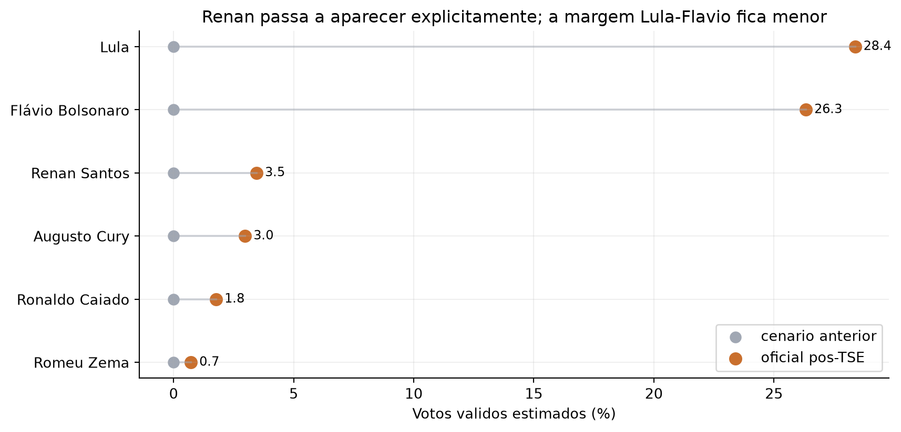
Impacto da coleta recente no cenario principal
Code
recent_raw = read_csv(RAW /"pesquisas_2026_agosto_setembro_manual.csv")ifnot recent_raw.empty: principal = recent_raw[recent_raw["cenario"].eq("agosto_setembro_2026_sem_marcal")] alternativo = recent_raw[recent_raw["cenario"].eq("agosto_setembro_2026_com_marcal")] principal_unique = principal.drop_duplicates(["instituto", "data_publicacao", "cenario"]).shape[0] alternativo_unique = alternativo.drop_duplicates(["instituto", "data_publicacao", "cenario"]).shape[0] display(HTML(f""" <div class="callout-box"> <strong>Coleta adicionada:</strong> {len(recent_raw)} linhas candidato-pesquisa manuais. Isso corresponde a {principal_unique + alternativo_unique} pesquisas/cenarios unicos recentes:{principal_unique} no cenario sem Marcal e {alternativo_unique} no cenario alternativo com Marcal. </div> """))
Coleta adicionada: 231 linhas candidato-pesquisa manuais.
Isso corresponde a 27 pesquisas/cenarios unicos recentes:
18 no cenario sem Marcal e 9 no cenario alternativo com Marcal.
Historico de previsoes
Cada execucao do nowcast pode ser registrada como snapshot. Isso permite acompanhar como a previsao muda conforme novas pesquisas entram ou a base historica e revisada.
ifnot forecast_history.empty: hist = forecast_history.copy() hist = current_scenario(hist) hist["data_registro"] = pd.to_datetime(hist["data_registro"], errors="coerce") hist["voto_valido_estimado"] = pd.to_numeric(hist["voto_valido_estimado"], errors="coerce") focus = hist.groupby("candidato")["voto_valido_estimado"].mean().sort_values(ascending=False).head(6).index hist = hist[hist["candidato"].isin(focus)] fig, ax = plt.subplots(figsize=(9, 4.4))for candidate, group in hist.groupby("candidato"): series = group.groupby("data_registro")["voto_valido_estimado"].mean().sort_index() ax.plot(series.index, series.values, marker="o", label=candidate) ax.set_title("Historico comeca agora; proximas pesquisas criam a serie viva") ax.set_xlabel("Data de registro da rodada") ax.set_ylabel("Votos validos estimados (%)") ax.legend() plt.tight_layout()
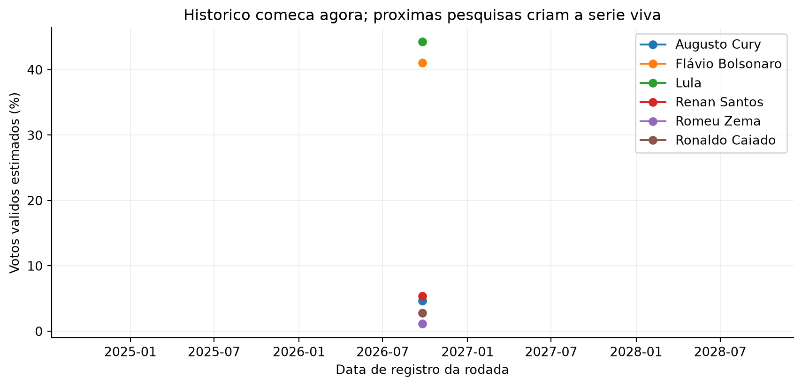
Evolucao registrada do nowcast por snapshot
Fontes e referencias
As fontes entram em tres camadas:
Resultado oficial: Dados Abertos do TSE, para votos validos do primeiro turno.
Pesquisas registradas: PesqEle/TSE e fontes primarias dos institutos, para pesquisas atuais e historicas.
Fundamentos objetivos: variaveis politicas e economicas usadas na literatura de previsao eleitoral.
Referencias uteis para desenho do modelo:
FiveThirtyEight/538: uso de medias de pesquisas, ajuste por qualidade do instituto, incerteza e simulacoes.
The Economist: combinacao de pesquisas, fundamentos, estrutura hierarquica e simulacoes probabilisticas.
Alan Abramowitz, Time-for-Change: aprovacao presidencial, crescimento economico e tempo do partido no poder.
Douglas Hibbs, Bread and Peace: renda real e custo politico de guerras como explicadores do voto governista nos EUA.
Cole Nussbaumer Knaflic, Storytelling with Data: foco em mensagem, remocao de ruido visual e destaque explicito do que importa.
Variaveis do primeiro modelo
O baseline usa variaveis que saem diretamente das pesquisas ou de calendario:
voto total do candidato na pesquisa;
brancos, nulos e indecisos;
voto valido estimado;
instituto;
tamanho da amostra;
data de campo;
data de publicacao;
dias entre fim do campo e primeiro turno;
dias entre publicacao e primeiro turno;
ordem da pesquisa dentro do instituto e cenario;
ordem geral da pesquisa na campanha.
ajuste por vies historico do instituto, quando ha dados suficientes;
efeito casa por instituto e candidato, quando ha dados suficientes;
peso por qualidade historica do instituto.
Code
if elections.empty: fig, ax = plt.subplots() ax.text(0.5, 0.5, "Nenhuma eleicao cadastrada ainda", ha="center", va="center", fontsize=14) ax.axis("off")else: plot = elections.assign(ano_eleicao=elections["ano_eleicao"].astype(str)) fig, ax = plt.subplots(figsize=(9, 2.8)) ax.barh(plot["ano_eleicao"], [1] *len(plot), color=BLUE) ax.set_xlabel("Cadastro da eleicao") ax.set_ylabel("Ano") ax.set_xticks([]) ax.set_title("Calendario historico para calcular distancia ate a eleicao")for y, obs inenumerate(plot["observacao"].fillna("")): ax.text(1.02, y, obs[:70], va="center", fontsize=8) ax.set_xlim(0, 2.4) plt.tight_layout()
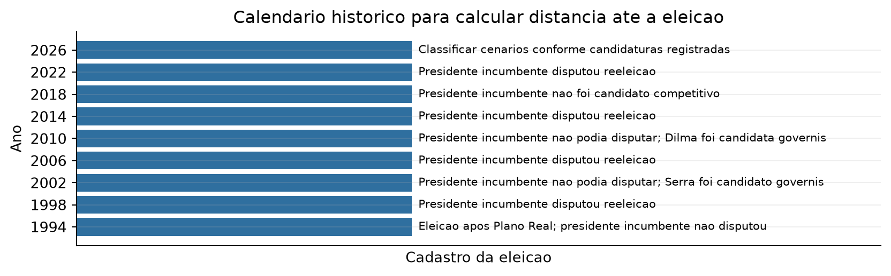
Eleicoes cadastradas no projeto
Code
ifnot polls.empty: counts = ( polls.groupby("ano_eleicao") .agg( linhas=("candidato", "size"), pesquisas_cenarios=("data_publicacao", lambda s: 0), ) .reset_index() ) uniques = polls.drop_duplicates(["ano_eleicao", "instituto", "data_publicacao", "cenario"]).groupby("ano_eleicao").size() counts["pesquisas_cenarios"] = counts["ano_eleicao"].map(uniques).fillna(0).astype(int) fig, ax = plt.subplots(figsize=(9, 3.8)) colors = [ORANGE if year ==2026else BLUE for year in counts["ano_eleicao"]] ax.bar(counts["ano_eleicao"].astype(str), counts["pesquisas_cenarios"], color=colors) ax.set_title("Pesquisas unicas crescem nas eleicoes recentes; anos antigos dependem de acervo") ax.set_xlabel("Ano da eleicao") ax.set_ylabel("Pesquisas/cenarios unicos")for i, row inenumerate(counts.itertuples()): ax.text( i, row.pesquisas_cenarios + counts["pesquisas_cenarios"].max() *0.02,f"{row.pesquisas_cenarios}\n({row.linhas} linhas)", ha="center", fontsize=8, ) plt.tight_layout()
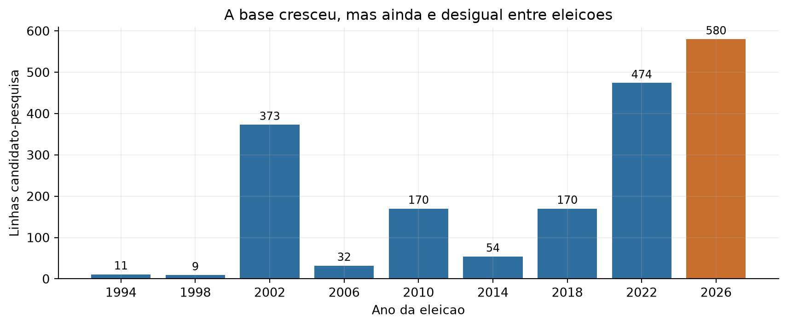
Pesquisas/cenarios unicos por eleicao
Cobertura real da base
Uma linha do arquivo processado e uma combinacao candidato-pesquisa. Uma pesquisa com oito candidatos vira oito linhas. Para avaliar a cobertura real, a unidade correta e a combinacao ano + instituto + data + cenario.
ifnot polls.empty: unique = polls.drop_duplicates(["ano_eleicao", "instituto", "data_publicacao", "cenario"]).groupby("ano_eleicao").size() lines = polls.groupby("ano_eleicao").size() summary = pd.DataFrame({"linhas": lines, "pesquisas_cenarios": unique}).reset_index() x =range(len(summary)) fig, ax1 = plt.subplots(figsize=(9, 4.2)) ax2 = ax1.twinx() ax1.bar([i -0.18for i in x], summary["pesquisas_cenarios"], width=0.36, color=BLUE, label="pesquisas/cenarios") ax2.bar([i +0.18for i in x], summary["linhas"], width=0.36, color=GRAY, alpha=0.55, label="linhas candidato-pesquisa") ax1.set_xticks(list(x)) ax1.set_xticklabels(summary["ano_eleicao"].astype(str)) ax1.set_ylabel("Pesquisas/cenarios unicos") ax2.set_ylabel("Linhas candidato-pesquisa") ax1.set_title("Quantidade real de pesquisas e tamanho tabular sao coisas diferentes") handles1, labels1 = ax1.get_legend_handles_labels() handles2, labels2 = ax2.get_legend_handles_labels() ax1.legend(handles1 + handles2, labels1 + labels2, loc="upper left") plt.tight_layout()
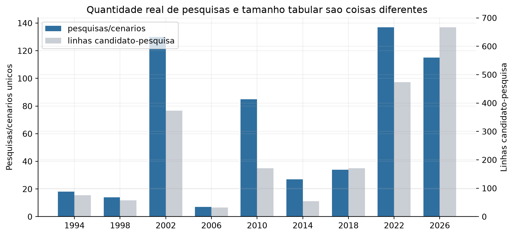
Linhas candidato-pesquisa versus pesquisas/cenarios unicos
Qualidade da base historica
Esta leitura separa volume de confiabilidade. Uma eleicao pode ter muitas linhas e ainda depender de amostras imputadas, series consolidadas ou fontes secundarias. Isso importa porque o backtest deve punir menos um modelo quando a propria base historica daquele ano e fraca.
Code
ifnot polls.empty: base = polls.copy() unique = base.drop_duplicates(["ano_eleicao", "instituto", "data_publicacao", "cenario"]).copy() unique["amostra_imputada"] = pd.to_numeric(unique.get("amostra_imputada", 0), errors="coerce").fillna(0)def fonte_categoria(value): text =str(value).lower()if"primaria"in text or"confirmad"in text or"oficial"in text:return"fonte forte"if"secundaria"in text or"folha"in text or"gazeta"in text:return"fonte secundaria auditada"if"wikipedia"in text or"pesqele"in text or"normalizada"in text:return"base agregada"return"outra" unique["categoria_fonte"] = unique["qualidade_fonte"].map(fonte_categoria) summary = ( unique.groupby(["ano_eleicao", "categoria_fonte"], as_index=False) .size() .rename(columns={"size": "pesquisas_cenarios"}) ) total = summary.groupby("ano_eleicao")["pesquisas_cenarios"].transform("sum") summary["pct"] = (summary["pesquisas_cenarios"] / total *100).round(1) display(summary.sort_values(["ano_eleicao", "pesquisas_cenarios"], ascending=[True, False]))
ano_eleicao
categoria_fonte
pesquisas_cenarios
pct
0
1994
fonte forte
15
83.3
1
1994
fonte secundaria auditada
3
16.7
2
1998
fonte forte
8
57.1
3
1998
fonte secundaria auditada
6
42.9
5
2002
fonte secundaria auditada
129
99.2
4
2002
fonte forte
1
0.8
6
2006
fonte secundaria auditada
4
57.1
7
2006
outra
3
42.9
8
2010
base agregada
85
100.0
9
2014
base agregada
27
100.0
10
2018
base agregada
34
100.0
11
2022
base agregada
137
100.0
12
2026
base agregada
76
66.1
13
2026
fonte secundaria auditada
39
33.9
Code
ifnot polls.empty: base = polls.copy() unique = base.drop_duplicates(["ano_eleicao", "instituto", "data_publicacao", "cenario"]).copy() unique["categoria_fonte"] = unique["qualidade_fonte"].map(fonte_categoria) pivot = unique.pivot_table(index="ano_eleicao", columns="categoria_fonte", values="cenario", aggfunc="count", fill_value=0) order = [c for c in ["fonte forte", "fonte secundaria auditada", "base agregada", "outra"] if c in pivot.columns] pivot = pivot[order] colors = {"fonte forte": GREEN,"fonte secundaria auditada": BLUE,"base agregada": ORANGE,"outra": GRAY, } fig, ax = plt.subplots(figsize=(9, 4.3)) bottom =Nonefor col in pivot.columns: ax.bar(pivot.index.astype(str), pivot[col], bottom=bottom, label=col, color=colors.get(col, GRAY)) bottom = pivot[col] if bottom isNoneelse bottom + pivot[col] ax.set_title("Nem toda cobertura tem a mesma confiabilidade") ax.set_xlabel("Ano da eleicao") ax.set_ylabel("Pesquisas/cenarios unicos") ax.legend(title="Categoria da fonte", bbox_to_anchor=(1.02, 1), loc="upper left") plt.tight_layout()
A literatura e modelos profissionais costumam combinar pesquisas com fundamentos. Para o Brasil, algumas variaveis sao objetivas o suficiente para entrar cedo, desde que a fonte seja consistente:
incumbencia: se o candidato e presidente tentando reeleicao;
sucessor governista: candidato apoiado pelo presidente quando o presidente nao disputa;
tempo do grupo no poder: quantos mandatos consecutivos o campo governista esta no governo;
aprovacao do governo: percentual de otimo/bom, regular, ruim/pessimo ou aprovacao/desaprovacao;
economia: inflacao, desemprego, crescimento do PIB, renda real e indicadores de percepcao economica;
rejeicao: percentual que declara nao votar no candidato;
conhecimento do candidato: quando disponivel em pesquisas;
metodo da pesquisa: presencial, telefone, online ou misto;
qualidade historica do instituto: erro medio passado e frequencia de pesquisas.
Essas variaveis devem ser comparadas por backtest. Se nao melhorarem a previsao fora da amostra, ficam como explicacao, nao como motor do modelo final.
Code
ifnot fundamentals.empty: view = fundamentals.copy()for col in ["pib_crescimento", "inflacao", "desemprego"]: view[col] = pd.to_numeric(view[col], errors="coerce").round(2) display(view[["ano_eleicao", "fundamentos_ano_referencia", "pib_crescimento", "inflacao", "desemprego", "fundamentos_defasagem_max"]])
O gargalo atual nao e algoritmo: e confiabilidade das series antigas. A base ja separa fonte, instituto, amostra imputada e cenario para permitir auditoria incremental. A busca mais recente adicionou Datafolha e Ibope para 1994 e 1998, mas ainda vale priorizar relatorios primarios completos e novas tabelas extraiveis desses anos.
if polls.empty or"voto_valido_estimado"notin polls: fig, ax = plt.subplots() ax.text(0.5, 0.5, "Sem serie temporal ainda", ha="center", va="center", fontsize=14) ax.text(0.5, 0.40, "Quando houver pesquisas processadas, as linhas mostram a trajetoria por candidato.", ha="center", va="center", fontsize=9) ax.axis("off")else: tmp = polls.copy() tmp["data_publicacao"] = pd.to_datetime(tmp["data_publicacao"]) tmp["voto_valido_estimado"] = pd.to_numeric(tmp["voto_valido_estimado"]) latest_year = tmp["ano_eleicao"].max() tmp = tmp[tmp["ano_eleicao"] == latest_year] fig, ax = plt.subplots() top_candidates = tmp.groupby("candidato")["voto_valido_estimado"].mean().sort_values(ascending=False).head(8).index tmp = tmp[tmp["candidato"].isin(top_candidates)]for candidate, group in tmp.groupby("candidato"): series = group.groupby("data_publicacao")["voto_valido_estimado"].mean().sort_index() ax.plot(series.index, series.values, marker="o", label=candidate) ax.set_ylabel("Votos validos estimados (%)") ax.set_xlabel("Data de publicacao") ax.set_title(f"Evolucao das pesquisas em {latest_year}") ax.legend() plt.tight_layout()
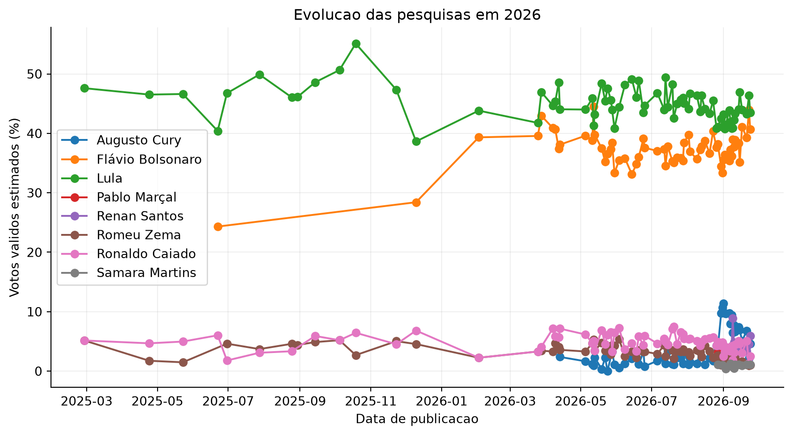
Evolucao de votos validos estimados
Code
if ensemble_forecast.empty: fig, ax = plt.subplots() ax.text(0.5, 0.5, "Sem previsao ensemble ainda", ha="center", va="center", fontsize=14) ax.axis("off")else: tmp = ensemble_forecast.copy() tmp["voto_valido_estimado"] = pd.to_numeric(tmp["voto_valido_estimado"]) tmp["probabilidade_liderar"] = pd.to_numeric(tmp["probabilidade_liderar"]) scenarios =list(tmp["cenario"].drop_duplicates()) fig, axes = plt.subplots(len(scenarios), 1, figsize=(9, max(3, 2.7*len(scenarios))), squeeze=False)for ax, scenario inzip(axes.flat, scenarios): group = tmp[tmp["cenario"] == scenario].head(6).sort_values("voto_valido_estimado") colors = [ORANGE if i >=len(group) -2else GREEN for i inrange(len(group))] ax.barh(group["candidato"], group["voto_valido_estimado"], color=colors) ax.set_title(scenario) ax.set_xlabel("Votos validos estimados (%)")for i, row inenumerate(group.itertuples()): ax.text(row.voto_valido_estimado +0.5, i, f"{row.voto_valido_estimado:.1f} | lidera {row.probabilidade_liderar:.0%}", va="center", fontsize=9) plt.tight_layout()
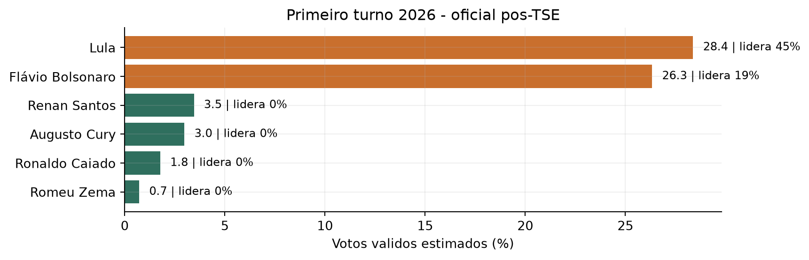
Previsao final do ensemble disciplinado
Modelos
Uma revisao mais completa da literatura esta em docs/revisao-literatura-metodos.md. A leitura principal e simples: pesquisas dominam perto da eleicao; fundamentos ajudam longe da eleicao; modelos Bayesianos dinamicos sao a evolucao estatistica mais natural; ML, redes neurais e ensembles entram como desafiantes do baseline, nao como substitutos automaticos.
Code
rows = [ ["ensemble_disciplinado", "Producao", "Combina baseline e Bayesiano dinamico com pesos por backtest vivo."], ["baseline_pesquisa", "Referencia", "Media ponderada por pesquisas; e o rival minimo a ser vencido."], ["bayesiano_dinamico_kalman", "Producao assistida", "Estado latente temporal; melhora incerteza e leitura da corrida."], ["random_forest_07_600 / gradient_boosting", "Experimental", "ML tabular competitivo, mas ainda instavel entre eleicoes."], ["mlp_pequena", "Experimental", "Deep learning pequeno; mantido como teste, nao como decisor."], ["voting_ia / stacking_ia", "Experimental", "IA/ensemble supervisionado; so entra se vencer fora da amostra."],]display(pd.DataFrame(rows, columns=["modelo", "status", "papel no relatorio"]))
Media ponderada por recencia e amostra. Tambem ha versoes com qualidade historica do instituto e efeito casa por instituto-candidato. O baseline puro continua sendo o primeiro rival a ser batido.
Inferencia
Modelo para explicar erro historico:
erro ~ dias_ate_eleicao + incumbente + sucessor_governo + aprovacao_governo + economia + metodo + instituto
Machine learning
Modelos candidatos:
regressao regularizada;
random forest;
gradient boosting;
ensemble simples.
IA e deep learning
So entram depois de backtest suficiente. A base presidencial brasileira e pequena, entao uma rede neural deve ser pequena e tratada como experimento, nao como previsao principal.
Code
modelos_literatura = pd.DataFrame([ ["Media de pesquisas", "Agregacao de pesquisas recentes", "baseline_pesquisa", "Referencia principal"], ["Inferencia", "Regressao explicavel para erro e variaveis politicas", "inferencial_ols", "Diagnostico"], ["ML tabular", "Regularizacao, margem, arvores e boosting", "ridge, elastic_net, huber, svr_rbf, random_forest com ntree/mtry", "Desafiantes"], ["Deep learning", "MLP tabular pequena/media/profunda", "mlp_pequena, mlp_media, mlp_profunda", "Experimental"], ["Efeito casa", "Correcao por vies historico de instituto-candidato", "baseline_efeito_casa", "Melhor baseline atual"], ["IA / ensemble", "Combinacao disciplinada de modelos", "voting_ia, stacking_ia, ensemble_pesos", "Auxiliar"], ["Bayesiano dinamico", "Estado latente da corrida no tempo", "bayesiano_dinamico_kalman", "Nowcast robusto em teste"],], columns=["familia", "referencia conceitual", "modelo no projeto", "papel"])display(modelos_literatura)
familia
referencia conceitual
modelo no projeto
papel
0
Media de pesquisas
Agregacao de pesquisas recentes
baseline_pesquisa
Referencia principal
1
Inferencia
Regressao explicavel para erro e variaveis pol...
inferencial_ols
Diagnostico
2
ML tabular
Regularizacao, margem, arvores e boosting
ridge, elastic_net, huber, svr_rbf, random_for...
Desafiantes
3
Deep learning
MLP tabular pequena/media/profunda
mlp_pequena, mlp_media, mlp_profunda
Experimental
4
Efeito casa
Correcao por vies historico de instituto-candi...
baseline_efeito_casa
Melhor baseline atual
5
IA / ensemble
Combinacao disciplinada de modelos
voting_ia, stacking_ia, ensemble_pesos
Auxiliar
6
Bayesiano dinamico
Estado latente da corrida no tempo
bayesiano_dinamico_kalman
Nowcast robusto em teste
Bayesiano dinamico
O bayesiano_dinamico_kalman trata a corrida como estado latente diario. Cada pesquisa e uma observacao ruidosa dessa trajetoria; o filtro de Kalman estima o nivel atual e projeta ate o primeiro turno com intervalo de incerteza. E mais honesto que a tendencia linear simples porque separa ruido observado de movimento temporal estimado.
No backtest vivo inicial, ele quase empata com o baseline_temporal e supera os baselines nao temporais. Por isso, entra no ensemble disciplinado com peso condicionado ao desempenho na previsao viva.
Cada modelo deve ser avaliado por backtest historico:
erro medio absoluto por candidato;
acerto dos dois candidatos no segundo turno;
erro do primeiro colocado;
calibracao dos intervalos;
estabilidade da previsao ao adicionar novas pesquisas.
Avaliacao cronologica
Esta avaliacao responde diretamente: se o projeto existisse antes de cada eleicao historica, o que ele teria previsto usando apenas eleicoes anteriores? Com a coleta de 2006, agora tambem entram testes para 2010 e 2014, antes dos testes principais de 2018 e 2022.
Code
if rolling_summary.empty: fig, ax = plt.subplots() ax.text(0.5, 0.5, "Sem avaliacao cronologica ainda", ha="center", va="center", fontsize=14) ax.axis("off")else: tmp = rolling_summary.copy() tmp["ano_teste"] = pd.to_numeric(tmp["ano_teste"]) tmp["mae"] = pd.to_numeric(tmp["mae"]) years =list(tmp["ano_teste"].drop_duplicates()) fig, axes = plt.subplots(1, len(years), figsize=(5*len(years), 4), squeeze=False)for ax, year inzip(axes.flat, years): group = tmp[tmp["ano_teste"] == year].sort_values("mae", ascending=False) colors = ["#4C78A8"if model =="baseline_pesquisa"else"#A0A7B3"for model in group["modelo"]] ax.barh(group["modelo"], group["mae"], color=colors) ax.set_title(f"Previsao de {year}") ax.set_xlabel("Erro medio absoluto") ax.set_ylabel("")for i, row inenumerate(group.itertuples()): ax.text(row.mae +0.25, i, f"{row.mae:.1f}", va="center", fontsize=9) plt.tight_layout()
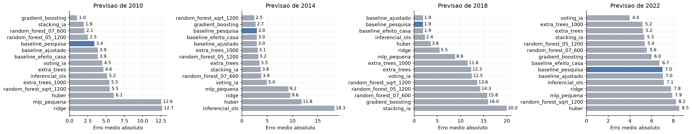
Backtest cronologico: treina no passado e prevê a eleicao seguinte
O erro medio geral e util para ranquear modelos, mas ele esconde duas coisas importantes: eleicoes dificeis e candidatos que os modelos tendem a superestimar ou subestimar. Abaixo, o mesmo backtest cronologico e aberto por ano e por candidato.
Code
if rolling.empty: fig, ax = plt.subplots() ax.text(0.5, 0.5, "Sem erros por eleicao ainda", ha="center", va="center", fontsize=14) ax.axis("off")else: view = rolling.copy() view["erro_abs"] = pd.to_numeric(view["erro_abs"], errors="coerce") keep = ["baseline_pesquisa", "gradient_boosting", "random_forest_07_600", "voting_ia", "mlp_pequena"] view = view[view["modelo"].isin(keep)] heat = view.pivot_table(index="modelo", columns="ano_eleicao", values="erro_abs", aggfunc="mean") heat = heat.loc[[m for m in keep if m in heat.index]] fig, ax = plt.subplots(figsize=(9, 4)) image = ax.imshow(heat, cmap="YlOrRd", aspect="auto") ax.set_xticks(range(len(heat.columns)), heat.columns) ax.set_yticks(range(len(heat.index)), heat.index) ax.set_xlabel("Eleicao prevista") ax.set_ylabel("")for y, model inenumerate(heat.index):for x, year inenumerate(heat.columns): value = heat.loc[model, year] ax.text(x, y, f"{value:.1f}", ha="center", va="center", fontsize=9) fig.colorbar(image, ax=ax, label="Erro medio absoluto") plt.tight_layout()
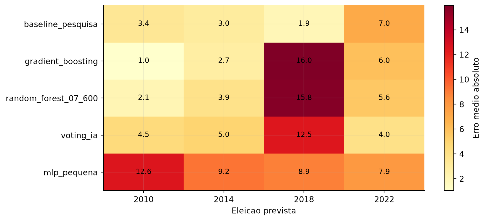
Erro absoluto medio por modelo e eleicao no backtest cronologico
Depois da avaliacao historica, os mesmos modelos sao treinados com todas as eleicoes disponiveis ate 2022 e aplicados aos cenarios principais de 2026.
Code
if rolling_2026.empty: fig, ax = plt.subplots() ax.text(0.5, 0.5, "Sem previsao 2026 por modelo ainda", ha="center", va="center", fontsize=14) ax.axis("off")else: tmp = rolling_2026.copy() tmp["previsto"] = pd.to_numeric(tmp["previsto"]) scenario_options = tmp["cenario_rotulo"].drop_duplicates() recent = [s for s in scenario_options ifstr(s) == CURRENT_SCENARIO_LABEL]ifnot recent: recent = [s for s in scenario_options if"agosto/setembro"instr(s) and"Marcal"notinstr(s) and"Marçal"notinstr(s)] first_scenario = recent[0] if recent else scenario_options.iloc[0] plot = tmp[tmp["cenario_rotulo"] == first_scenario] pivot = plot.pivot_table(index="candidato", columns="modelo", values="previsto", aggfunc="mean")if"baseline_pesquisa"in pivot.columns: order_candidates = pivot["baseline_pesquisa"].sort_values(ascending=False).head(8).index pivot = pivot.loc[order_candidates] keep_models = [m for m in ["baseline_pesquisa", "random_forest_07_600", "gradient_boosting", "voting_ia", "mlp_pequena"] if m in pivot.columns]if keep_models: pivot = pivot[keep_models] order = pivot.get("baseline_pesquisa", pivot.mean(axis=1)).sort_values(ascending=True).index pivot = pivot.loc[order] ax = pivot.plot(kind="barh", figsize=(10, 6)) ax.set_title(first_scenario) ax.set_xlabel("Votos validos estimados (%)") ax.set_ylabel("") ax.legend(title="Modelo", bbox_to_anchor=(1.02, 1), loc="upper left") plt.tight_layout()
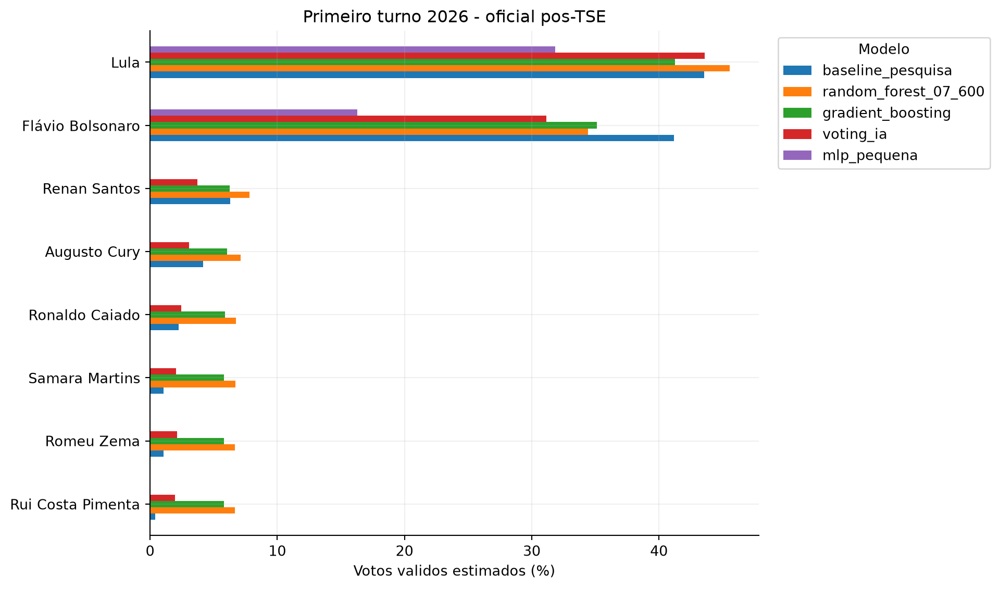
Previsao de 2026 por modelo, treinada com eleicoes ate 2022
Code
ifnot rolling_2026.empty: view = rolling_2026.copy() view["previsto"] = pd.to_numeric(view["previsto"]).round(2) scenario_options = view["cenario_rotulo"].drop_duplicates() recent = [s for s in scenario_options ifstr(s) == CURRENT_SCENARIO_LABEL]ifnot recent: recent = [s for s in scenario_options if"agosto/setembro"instr(s) and"Marcal"notinstr(s) and"Marçal"notinstr(s)] first_scenario = recent[0] if recent else scenario_options.iloc[0] focus = view[view["cenario_rotulo"].eq(first_scenario)].copy() top_candidates = ( focus[focus["modelo"].eq("baseline_pesquisa")] .sort_values("previsto", ascending=False) .head(8)["candidato"] ) focus = focus[focus["candidato"].isin(top_candidates)] keep_models = ["baseline_pesquisa", "random_forest_07_600", "gradient_boosting", "voting_ia", "mlp_pequena"] focus = focus[focus["modelo"].isin(keep_models)] display(focus[["modelo", "cenario_rotulo", "candidato", "previsto", "ano_treino_max"]].sort_values(["candidato", "modelo"]))
modelo
cenario_rotulo
candidato
previsto
ano_treino_max
46
baseline_pesquisa
Primeiro turno 2026 - oficial pos-TSE
Augusto Cury
4.18
2022
684
gradient_boosting
Primeiro turno 2026 - oficial pos-TSE
Augusto Cury
6.07
2022
742
mlp_pequena
Primeiro turno 2026 - oficial pos-TSE
Augusto Cury
0.00
2022
394
random_forest_07_600
Primeiro turno 2026 - oficial pos-TSE
Augusto Cury
7.10
2022
800
voting_ia
Primeiro turno 2026 - oficial pos-TSE
Augusto Cury
3.06
2022
49
baseline_pesquisa
Primeiro turno 2026 - oficial pos-TSE
Flávio Bolsonaro
41.17
2022
687
gradient_boosting
Primeiro turno 2026 - oficial pos-TSE
Flávio Bolsonaro
35.14
2022
745
mlp_pequena
Primeiro turno 2026 - oficial pos-TSE
Flávio Bolsonaro
16.30
2022
397
random_forest_07_600
Primeiro turno 2026 - oficial pos-TSE
Flávio Bolsonaro
34.42
2022
803
voting_ia
Primeiro turno 2026 - oficial pos-TSE
Flávio Bolsonaro
31.17
2022
51
baseline_pesquisa
Primeiro turno 2026 - oficial pos-TSE
Lula
43.56
2022
689
gradient_boosting
Primeiro turno 2026 - oficial pos-TSE
Lula
41.26
2022
747
mlp_pequena
Primeiro turno 2026 - oficial pos-TSE
Lula
31.83
2022
399
random_forest_07_600
Primeiro turno 2026 - oficial pos-TSE
Lula
45.58
2022
805
voting_ia
Primeiro turno 2026 - oficial pos-TSE
Lula
43.59
2022
52
baseline_pesquisa
Primeiro turno 2026 - oficial pos-TSE
Renan Santos
6.29
2022
690
gradient_boosting
Primeiro turno 2026 - oficial pos-TSE
Renan Santos
6.25
2022
748
mlp_pequena
Primeiro turno 2026 - oficial pos-TSE
Renan Santos
0.00
2022
400
random_forest_07_600
Primeiro turno 2026 - oficial pos-TSE
Renan Santos
7.82
2022
806
voting_ia
Primeiro turno 2026 - oficial pos-TSE
Renan Santos
3.73
2022
53
baseline_pesquisa
Primeiro turno 2026 - oficial pos-TSE
Romeu Zema
1.05
2022
691
gradient_boosting
Primeiro turno 2026 - oficial pos-TSE
Romeu Zema
5.80
2022
749
mlp_pequena
Primeiro turno 2026 - oficial pos-TSE
Romeu Zema
0.00
2022
401
random_forest_07_600
Primeiro turno 2026 - oficial pos-TSE
Romeu Zema
6.68
2022
807
voting_ia
Primeiro turno 2026 - oficial pos-TSE
Romeu Zema
2.12
2022
54
baseline_pesquisa
Primeiro turno 2026 - oficial pos-TSE
Ronaldo Caiado
2.25
2022
692
gradient_boosting
Primeiro turno 2026 - oficial pos-TSE
Ronaldo Caiado
5.89
2022
750
mlp_pequena
Primeiro turno 2026 - oficial pos-TSE
Ronaldo Caiado
0.00
2022
402
random_forest_07_600
Primeiro turno 2026 - oficial pos-TSE
Ronaldo Caiado
6.74
2022
808
voting_ia
Primeiro turno 2026 - oficial pos-TSE
Ronaldo Caiado
2.44
2022
55
baseline_pesquisa
Primeiro turno 2026 - oficial pos-TSE
Rui Costa Pimenta
0.43
2022
693
gradient_boosting
Primeiro turno 2026 - oficial pos-TSE
Rui Costa Pimenta
5.80
2022
751
mlp_pequena
Primeiro turno 2026 - oficial pos-TSE
Rui Costa Pimenta
0.00
2022
403
random_forest_07_600
Primeiro turno 2026 - oficial pos-TSE
Rui Costa Pimenta
6.68
2022
809
voting_ia
Primeiro turno 2026 - oficial pos-TSE
Rui Costa Pimenta
1.96
2022
56
baseline_pesquisa
Primeiro turno 2026 - oficial pos-TSE
Samara Martins
1.08
2022
694
gradient_boosting
Primeiro turno 2026 - oficial pos-TSE
Samara Martins
5.80
2022
752
mlp_pequena
Primeiro turno 2026 - oficial pos-TSE
Samara Martins
0.00
2022
404
random_forest_07_600
Primeiro turno 2026 - oficial pos-TSE
Samara Martins
6.72
2022
810
voting_ia
Primeiro turno 2026 - oficial pos-TSE
Samara Martins
2.05
2022
Code
if backtest.empty: modelos = pd.DataFrame({"modelo": ["Baseline", "Inferencial", "ML tradicional", "IA/rede neural", "Ensemble"],"entra_agora": ["Sim", "Parcial", "Depois", "Depois", "Depois"],"papel": ["Primeira previsao viva","Entender impacto das variaveis","Tentar reduzir erro fora da amostra","Capturar interacoes se houver dados","Combinar apenas modelos aprovados", ], }) display(modelos)else: tmp = backtest.copy() tmp["mae"] = pd.to_numeric(tmp["mae"]) summary = tmp.groupby("modelo", as_index=False)["mae"].mean().sort_values("mae") fig, ax = plt.subplots() ax.barh(summary["modelo"], summary["mae"], color="#4C78A8") ax.invert_yaxis() ax.set_xlabel("Erro medio absoluto") ax.set_ylabel("Modelo") ax.set_title("Backtest: menor erro e melhor")for i, row inenumerate(summary.itertuples()): ax.text(row.mae +0.15, i, f"{row.mae:.2f}", va="center", fontsize=9) plt.tight_layout()
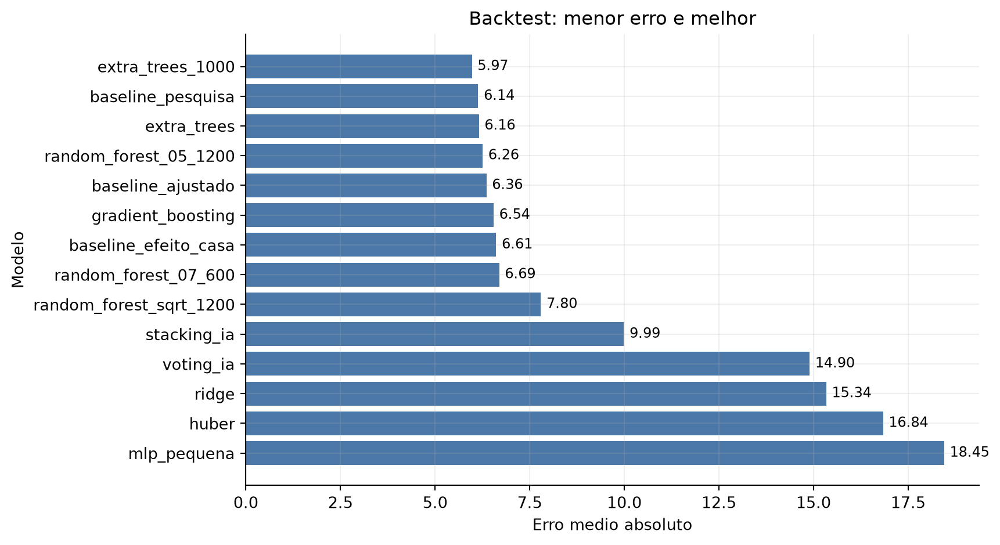
Erro medio absoluto no backtest por modelo
Backtest ponderado pela qualidade da base
O ranking bruto trata 1994, 1998 e 2022 como se tivessem a mesma confiabilidade de medicao. O ranking ponderado abaixo reduz o peso de anos com pouca cobertura, poucos institutos, muita amostra imputada ou dependencia forte de base agregada.
Os intervalos atuais sao derivados do erro medio historico de cada modelo. A tabela abaixo traduz esse erro em uma leitura operacional: se o erro historico seguir uma distribuicao aproximadamente normal, qual fracao dos casos cairia dentro do intervalo usado hoje?
if backtest_janelas.empty: fig, ax = plt.subplots() ax.text(0.5, 0.5, "Sem backtest por janela ainda", ha="center", va="center", fontsize=14) ax.axis("off")else: tmp = backtest_janelas.copy() tmp["dias_antes_eleicao"] = pd.to_numeric(tmp["dias_antes_eleicao"]) tmp["mae"] = pd.to_numeric(tmp["mae"]) tmp["modelo"] = tmp.get("modelo", "baseline_pesquisa") summary = tmp.groupby(["modelo", "dias_antes_eleicao"], as_index=False)["mae"].mean().sort_values("dias_antes_eleicao") fig, ax = plt.subplots()for model, group in summary.groupby("modelo"): ax.plot(group["dias_antes_eleicao"], group["mae"], marker="o", label=model) ax.invert_xaxis() ax.set_xlabel("Dias antes da eleicao") ax.set_ylabel("Erro medio absoluto") ax.set_title("Quanto mais perto da eleicao, menor tende a ser o erro") ax.legend() plt.tight_layout()
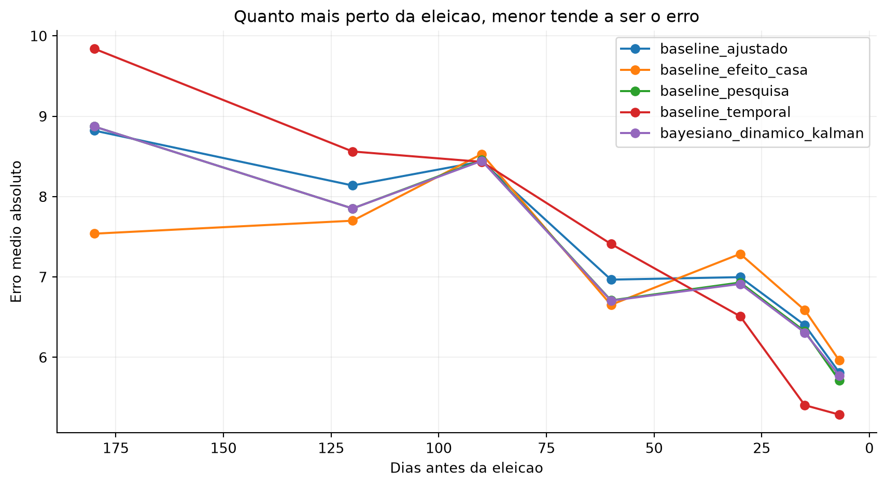
Erro do baseline por dias antes da eleicao
Code
if backtest_vivo.empty: fig, ax = plt.subplots() ax.text(0.5, 0.5, "Sem backtest de previsao viva ainda", ha="center", va="center", fontsize=14) ax.axis("off")else: tmp = backtest_vivo.copy() tmp["dias_antes_eleicao"] = pd.to_numeric(tmp["dias_antes_eleicao"]) tmp["mae"] = pd.to_numeric(tmp["mae"]) tmp["modelo"] = tmp.get("modelo", "baseline_pesquisa") summary = tmp.groupby(["modelo", "dias_antes_eleicao"], as_index=False)["mae"].mean().sort_values("dias_antes_eleicao") fig, ax = plt.subplots()for model, group in summary.groupby("modelo"): ax.plot(group["dias_antes_eleicao"], group["mae"], marker="o", label=model) ax.invert_xaxis() ax.set_xlabel("Dias antes da eleicao") ax.set_ylabel("Erro medio absoluto") ax.set_title("Previsao viva melhora conforme novas pesquisas ficam disponiveis") ax.legend() plt.tight_layout()
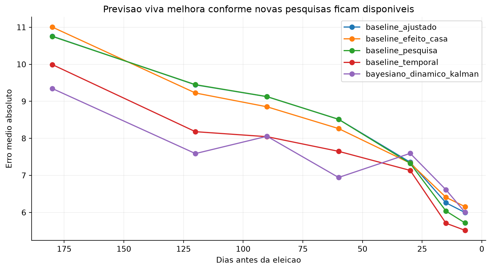
Simulacao de previsao viva: usa apenas pesquisas publicadas ate cada corte
Proximas entregas
Code
if operational_pending.empty: display(HTML("<p>Nenhuma pendencia operacional aberta nos filtros atuais.</p>"))else: display(operational_pending)
Nenhuma pendencia operacional aberta nos filtros atuais.
Depois desta fila operacional, as melhorias de modelo continuam sendo: melhorar o Bayesiano dinamico com efeito de instituto e fundamentos como prior; ampliar series nacionais antigas; adicionar aprovacao do governo, rejeicao e renda real.